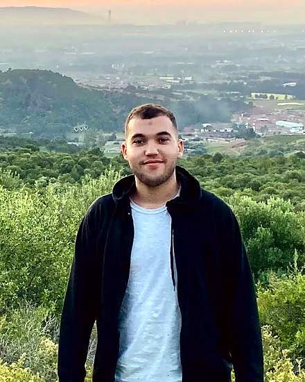

About me
I'm Noureddine Teriki, an IT student specializing in cybersecurity. I practice on TryHackMe, HackTheBox and HackerOne, and I write up what I learn on this blog.
Where I'm heading
I want a career in IT in general, specialized in cybersecurity. My target role is offensive security (penetration testing), and I plan to complete a master's degree in cybersecurity. Next certifications on my roadmap: eJPT, then OSCP.
Education & certifications
- CompTIA Security+ — not certified at the moment
- BTS Informatique — Développement Web et Mobile
- GoMyCode — cybersecurity training
- Master's degree in cybersecurity — planned